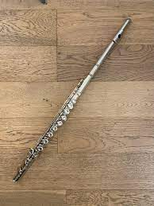
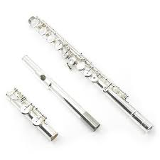
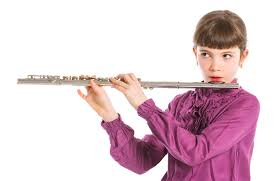

La flauta traversa es un instrumento musical de viento-madera que pertenece a la familia de las flautas.
Estructura y Materiales: La flauta traversa está compuesta principalmente por tres partes: la cabeza, el cuerpo y la pata. Está hecha típicamente de metal, como plata, níquel o cuproníquel, aunque también pueden encontrarse flautas de madera o materiales sintéticos.
Técnica de Soplado: Para tocar la flauta traversa, el músico sostiene el instrumento horizontalmente y sopla aire a través del agujero de la cabeza mientras presiona las llaves con los dedos para producir diferentes notas. La técnica de respiración y embocadura es fundamental para controlar el tono y la calidad del sonido.
Registro y Rango: La flauta traversa tiene un amplio rango de aproximadamente tres octavas, desde el do central hasta el do más agudo. Puede producir tanto sonidos suaves y melodiosos como sonidos brillantes y agudos.
Aplicaciones Musicales: La flauta traversa se utiliza en una amplia variedad de géneros musicales, incluyendo música clásica, música popular, jazz, música folclórica y música contemporánea. Es comúnmente usada en orquestas, bandas, conjuntos de cámara, ensambles de viento y como instrumento solista.
Historia: La flauta traversa tiene una larga historia que se remonta a la Edad Media, aunque la versión moderna del instrumento se desarrolló en el siglo XIX. Ha sido utilizada por compositores de renombre como Johann Sebastian Bach, Wolfgang Amadeus Mozart, Ludwig van Beethoven y Claude Debussy, entre otros.
Cuidado y Mantenimiento: El cuidado adecuado de la flauta traversa incluye limpiar regularmente las llaves y el interior del instrumento, revisar y ajustar las llaves según sea necesario, y almacenar el instrumento en un estuche adecuado cuando no se esté utilizando para protegerlo de daños y deterioro.